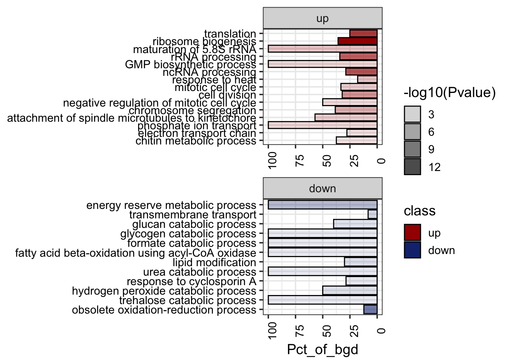

library(magrittr)
star_dir <- "/Users/pooja/Documents/ARG1_project/rnaseq_3h/03_alignment/for_DT318_paper/"
star_align_log_files <- fs::dir_ls(star_dir,
glob = "*Log.final.out" ,
recurse = T,type = "file")
names(star_align_log_files) <- gsub(x=basename(star_align_log_files), pattern ="*_star_alignLog.final.out", replacement = "")
parcutils::get_star_align_log_summary_plot(x = star_align_log_files,
col_total_reads = "red4",
col_mapped_reads = "red") RNASeq Analysis on DT23 treated Cn cells
Experimental set-up
WT (H99) and arg1∆ (H99 background) cells were allowed to grow over night in 50ml YPD media in 250ml flask at 220 rpm, 30C.
Refresh OD=1.8/ml in 10ml fresh YPD for 2hr (total OD=18)
After 2hr cells were treated with 100µM DT318 and equal amounts of DMSO as control (20µl from 50mM stock of DT318)
cells were incubated for 3hr at 30C, 220rpm
cells were harvested by spinning at 4400rpm for 5min, discard the supernatant snap freeze in liquid N2 and later in -80C
RNA extraction by trizol (1ml)
Resuspend RNA in nuclease free water (100µl)
Purify by qiagen RNeasy mini column kit.
RNA quantified by nanodrop and quality assessment by tapestation and samples with RIN value >7 were further processed
RNA library prepared using 1µg of RNA with illumina stranded mRNA library prep kit 1000000124518
library was sequenced at AGRF sequencing facility run on one Novaseq X 300 cycle (150bp PE)
Alignment statistics
Raw fastq files were aligned to FungiDb reference genome: FungiDB-59_CneoformansH99 using STAR aligner (DT23=DT318)
Below are the mapping statistics for each of the sample;
Generate count matrix using Rsubread
source("run_rsubread.R")
library(magrittr)
star_dir <- "/Users/pooja/Documents/ARG1_project/rnaseq_3h/03_alignment/for_DT318_paper"
gff_file <- "/Users/pooja/Documents/CDK7_project/RNASeq/RNASeq_1h/GENOME/FungiDB-59_CneoformansH99.gff"
dir = list.files(star_dir, pattern = "*alignAligned.sortedByCoord.out.bam$", full.names = TRUE)
cc <- run_rsubread(dir = dir, gff_file = gff_file)
count_file="/Users/pooja/Documents/ARG1_project/DT23_rnaseq_analysis/DT23_Vs_WT_3h_count_mat.txt"
readr::write_delim(cc, file = count_file, delim = "\t")DESeq analysis
DESeq for differential gene expression and normalized count matrix
library(magrittr)
count_file="/Users/pooja/Documents/ARG1_project/DT23_rnaseq_analysis/DT23_Vs_WT_3h_count_mat.txt"
cc <- readr::read_delim(count_file, delim="\t", col_names = TRUE)
sample_info <- cc %>% colnames() %>% .[-1] %>%
tibble::tibble(samples = . , groups = rep(c("Arg1_DT23", "WT","WT_DT23") , each = 3))
sample_info# A tibble: 9 × 2
samples groups
<chr> <chr>
1 Arg1_DT318_3h_1 Arg1_DT23
2 Arg1_DT318_3h_2 Arg1_DT23
3 Arg1_DT318_3h_3 Arg1_DT23
4 WT_3h_1 WT
5 WT_3h_2 WT
6 WT_3h_3 WT
7 WT_DT318_3h_1 WT_DT23
8 WT_DT318_3h_2 WT_DT23
9 WT_DT318_3h_3 WT_DT23 res <- parcutils::run_deseq_analysis(counts = cc ,
sample_info = sample_info,
column_geneid = "gene_name" ,
cutoff_lfc = 1,
cutoff_pval = 0.05,
min_counts = 10,
group_numerator = c("WT_DT23","Arg1_DT23"),
group_denominator = c("WT"),
regul_based_upon = 1)
res$de_comparisons[1] "WT_DT23_VS_WT" "Arg1_DT23_VS_WT"deseq_WT_DT318_output <- res$dsr_tibble_deg[1]%>% tibble::as_tibble()Normalized count matrix
norm_mat <- parcutils::get_normalised_expression_matrix(x = res,
samples = NULL,
genes = NULL,
summarise_replicates = FALSE)Data quality assessment
Correlation between replicates
parcutils::get_corr_heatbox(x = res, show_corr_values = T, cluster_samples = F, plot_type = "upper")Correlation between triplicates is ~0.99, showing the data is of high quality and reproducible.
MA plot
deseq_out <- res %>%
tidyr::as_tibble()
deseq_out$dsr_tibble_deg[[1]] %>%
ggplot2::ggplot(ggplot2::aes(baseMean,log2FoldChange, color=regul))+
ggplot2::geom_point(size=0.9)+
ggplot2::scale_color_manual(values=c("blue2", "gray22", "red2"))+
ggplot2::scale_x_log10()+
ggplot2::geom_hline(yintercept = c(-1,1), linetype=2)+
ggplot2::theme_classic()+
ggplot2::ggtitle(res$de_comparisons[1])deg_table <- deseq_WT_DT318_output$WT_DT23_VS_WT %>%
dplyr::group_by(regul) %>%
dplyr::tally() %>%
dplyr::slice(1:2)
deg_table %>% ggplot2::ggplot(ggplot2::aes(n, regul, label=n))+
ggplot2::geom_col(fill=c("#16317d","#a40000"), color="black")+
ggplot2::geom_text(hjust=1, color="white")+
ggplot2::labs(x="number of genes", y="")Expression of genes from Inositol phosphate kinase pathway
IP_genes <- tibble::tribble(
~gene_names, ~name,
"CNAG_02867", "PLC1",
"CNAG_06500", "ARG1",
"CNAG_01294", "IPK1",
"CNAG_02897", "KCS1",
"CNAG_02161", "ASP1"
)
LFC_mat <- deseq_WT_DT318_output$WT_DT23_VS_WT %>%
dplyr::select(c(1,3))
IP_genes %>%
dplyr::inner_join(LFC_mat, by=c("gene_names"="gene_id")) %>%
tidyr::gather(sample, log2FoldChange, -gene_names, -name) %>%
dplyr::mutate(name=forcats::as_factor(name)) %>%
ggplot2::ggplot(ggplot2::aes(name,log2FoldChange,label=round(log2FoldChange,2), fill=sample))+
ggplot2::geom_col(position = "dodge",color="black")+
ggplot2::geom_text(vjust=-0.8, position = ggplot2::position_dodge(width = .9))+
ggplot2::theme_classic()Functional analysis of the deferentially expressed genes
dat_GO <- readr::read_delim("DT23_Vs_WT_GO.txt", delim="\t", col_names = TRUE) %>% dplyr::mutate(class=forcats::as_factor(class), Name=forcats::as_factor(Name))
dat_GO %>%
ggplot2::ggplot(ggplot2::aes(Name,Pct_of_bgd, alpha=-log10(Pvalue), fill=class))+
ggplot2::coord_flip()+
ggplot2::geom_col(color="black")+
ggplot2::scale_fill_manual(values=c("#a40000","#16317d"))+
ggplot2::facet_wrap(~class, scales="free")+
ggplot2::scale_y_continuous(trans = "reverse")+
ggplot2::theme_bw(base_size = 14)+
ggplot2::theme(axis.text = ggplot2::element_text(color="black"),
axis.title.y = ggplot2::element_blank(),
axis.text.x = ggplot2::element_text(angle = 90))
MIPS_dt <- tibble::tribble(
~gene_id, ~LFC,
"CNAG_01823", -0.32,
"CNAG_03262", 0.21,
"CNAG_05316", 0.37,
"CNAG_03277", 0.59,
"CNAG_06623", 2.15,
"CNAG_01539", 1.93
)
MIPS_dt %>% dplyr::mutate(gene_id=forcats::as_factor(gene_id)) %>%
ggplot2::ggplot(ggplot2::aes(gene_id, LFC, label=round(LFC,2)))+
ggplot2::geom_col(fill="gold3", color="black")+
ggplot2::geom_text(vjust=-0.8, position = ggplot2::position_dodge(width = .9))+
ggplot2::theme_bw()Inositol phosphate metabolic pathway (KEGG: cng00562)
dat_IPM <- readr::read_delim("IPM_pathway_LFC.txt", delim="\t", col_names = TRUE)
dat_IPM %>%
dplyr::arrange(log2FoldChange) %>%
dplyr::mutate(gene_name=forcats::as_factor(gene_name)) %>%
ggplot2::ggplot(ggplot2::aes( gene_name, log2FoldChange))+
ggplot2::geom_col(fill="#8B8386") +
ggplot2::geom_hline(yintercept = c(-1,1))+
ggplot2::coord_flip()+
ggplot2::theme_bw()